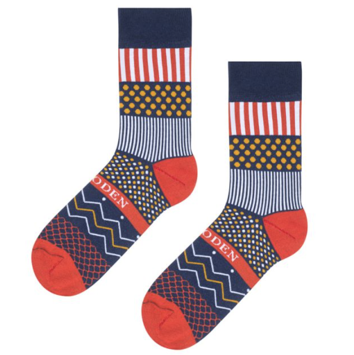
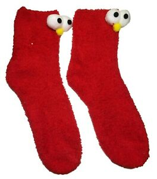
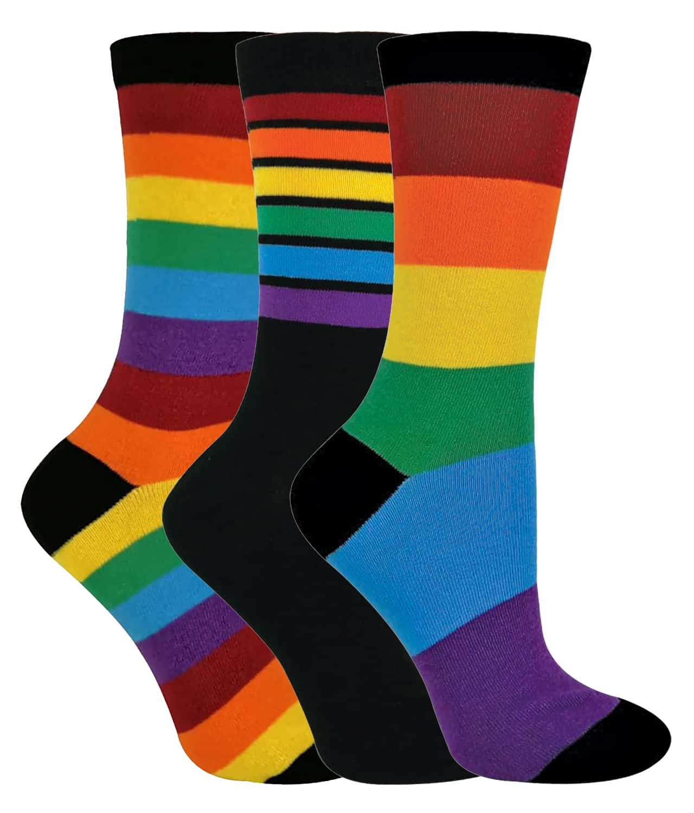

Soaked Sock is the World Best E-Commerce Website to buy Socks!
We hope you could find just the right socks for you :)
Item 1

Christmas Socks
Item 2

Elmo Socks
Item 3

Rainbow Socks
Socks are such a basic item that they're easy to take for granted...and leave on the floor, shove under beds, or lose to the dryer monster. (It happens to the best of us.) But socks actually deserve mad props for keeping our wiggly and sometimes stinky feet dry, warm, and free from blisters, so in honor of National Sock Day, here's a little history of how they became a thing and some guidelines on what kind to wear and when…or not.
Until the 17th century, socks were called stockings, but according to Wikipedia, the modern English word sock (first recorded in 1690, btw), evolved from the Old English socc which evolved from the Latin soccus…"a lightweight shoe worn by ancient Greek and Roman comic actors." Socks are worn on our feet (mostly) and come in various lengths, fabrics, colors, patterns, and styles, depending on their intended purpose, i.e. thick wool socks for skiing, thin wool dress socks for business, and short white socks for running. But the first socks were actually made from leather or matted animal hair – called "piloi" in 8th century BC Greece. A thousand years later in the 2nd century AD, the Romans were the first ones to sew woven fabrics together and make fitted socks ("udones").
The oldest surviving socks are a red-orange pair from between 250 AD and 420 AD that were excavated from Oxyrhynchus on the Nile in Egypt. They were made with the nålebinding technique, which means "knotless netting" and uses a single thread...the precursor to modern-day knitting and crochet. And they have split toes specifically for—gasp!—wearing with sandals. (Which the ancient Romans and Greeks did more or less exclusively, so they get a pass on any fashion judgement.) Speaking of Egypt, socks were so important that alongside all of the gold and jewels, King Tut's tomb supposedly contained several pairs made from linen.